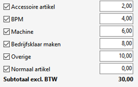

Door het gebruik van een artikelstructuur is het mogelijk om artikelen snel in te geven bij een bon, order of project.
Bij Onderhoud artikelstructuren (ASO) wordt bij het structuur-artikelcode / artikel het veld soort structuur opgegeven:
| Soort structuur | Optie voor structuur soorten: - Artikellijst (met keuzelijst) - Samenstelling, het structuur artikel mag geen voorraadhoudend artikel zijn. - Productstructuur (voor productie/projecten) - Machineverkooplijst, alleen icm gebruik machineadministratie 2.0 is ja. Opmerking: De structuur machineverkoop (artikel)lijst wordt gekoppeld aan een artikelgroep zie Onderhoud artikelgroepen. |
| Dynamisch | Vinkje voor een dynamische samenstelling instelling, bij soort structuur is samenstelling, vanaf versie 3.22. NB Artikelen kunnen toegevoegd worden voor deze samenstelling, bij - het scherm Artikel samenstelling (Dynamisch) of - de Barcode app op een Werkorder, door de artikelen te scannen, NB Een dynamische artikelstructuur heeft meestal geen regels. |
| Artikellijst | Samenstelling | Machineverkooplijst | Productstructuur | |
|---|---|---|---|---|
| Aantal | Variabel | Variabel - Het aantal kan gewijzigd worden (prijs wordt herberekend indien van toepassing). |
Het aantal is altijd 1, (maximaal 6 artikelen). | Variabel |
| Afdruk | Afhankelijk van instelling 'Afdruk factuur'. | Afhankelijk van instelling 'Afdruk factuur'. | Afhankelijk van instelling 'Afdruk factuur'. | Afhankelijk van instelling 'Afdruk factuur'. |
| Doel | Wordt gebruikt om als een soort hulp(lijst) om snel artikelen toe te voegen. | Vaste samenstelling, alle artikelen worden toegevoegd. | Machine verkoop, met daarbij komende kosten zoals, klaarmaak kosten, etc. | Vaste samenstelling, alle artikelen worden toegevoegd. |
| Dynamisch (nieuw) | Dmv vinkje, er kunnen dan artikelen toegevoegd worden op de samenstelling, vanaf versie 3.22. | |||
| Frequentie | Meest gebruikt | Specifieke gevallen | Gebruikt bij machine inkoop of verkoop. | Alleen bij projecten |
| Selectie | Alleen geselecteerde artikelen worden overgenomen. | Alle artikelen worden overgenomen op de order. Als het hoofdartikel verwijderd wordt op de order, worden alle regels verwijderd. |
- Artikelen/kosten kunnen aan/- of uitgevinkt worden. - Bedragen kunnen aangepast worden. |
|
| Soort | Flexibel door selectie | Statisch of vast, geen selectie | Flexibel door selectie | Specifieke instellingen mogelijk. |
| Voorbeeld | - Een kleine beurt / APK - Bepaalde keuringen |
- Actie pakket. - Gebruikt voor vaste werkzaamheden met altijd hetzelfde artikel aantal of verbruik. - Voor onderdelen die uit een vast aantal artikelen zijn samengesteld. |
- Accessoire artikel - Bedrijfsklaar maken - Overige  |
Gebruikt voor Project module |
| Voorraad | Per artikel | Geen voorraad bij hoofdartikel Bij Order picken 2.0 wordt er voor de onderliggende artikelen van een samenstelling geen rekening met de voorraadaantallen voor de kolom Gereserveerd in de verkooporder. Bij een artikellijst wel. |
- Geen voorraad / Voorraad wel mogelijk afhankelijk van bedrijf bij verkooporder. - Geen voorraad artikel bij inkooporders mogelijk. |
Per artikel maar ook per structuur-artikelcode, zie *. |
| Mutaties | - Wijzigen alleen in order - Verwijderen 1 voor 1 handmatig. |
- Wijzigen vanuit de order, via Rechtermuis > Wijzigen - Verwijderen, alles in 1x verwijderd. |
||
| Opmerking | Bij weborders, zijn subregels niet grijs. | Het hoofd artikel en sub-artikelen zijn grijs niet wijzigbaar. | De artikelomschrijving wordt gebruikt, niet die van de structuurregel. | De verrekenprijs kan berekend worden a.h.v. de samenstelling. |
Voorbeelden
Copyright ©